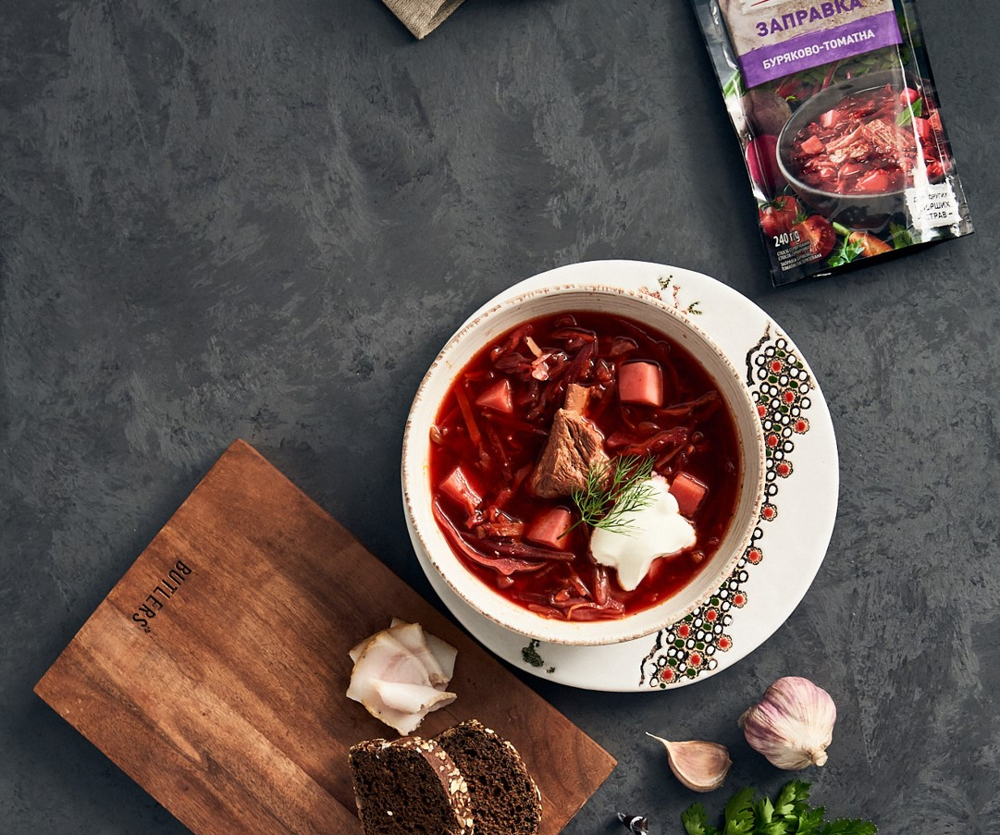

Борщ
Краткое описание блюда.
Время приготовления
2 часа
Порции
6-8 порций
Сложность
Средняя
Ингредиенты
- 500 г говядины
- 2 свеклы
- 2 моркови
- 3 картофелины
- 1 луковица
- 1/4 капусты
- 2 ст.л. томатной пасты
- Соль, перец, лавровый лист
- Сметана и зелень для подачи
Приготовление
- Мясо залить водой и варить 1.5 часа.
- Овощи нарезать, свеклу и морковь обжарить с луком.
- Добавить томатную пасту и тушить 5 минут.
- В бульон добавить картофель, через 10 минут - капусту.
- Через 10 минут добавить зажарку, соль, перец, лавровый лист.
- Варить еще 10 минут, дать настояться.